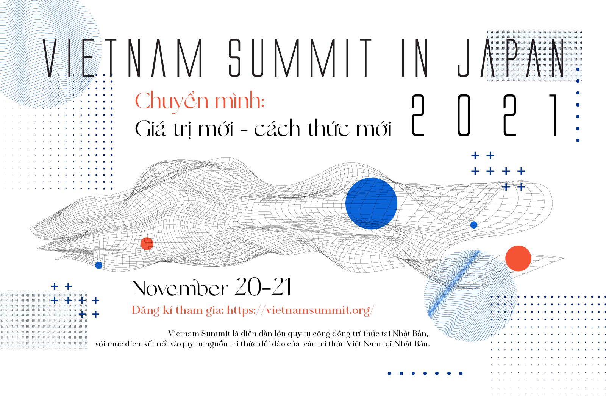
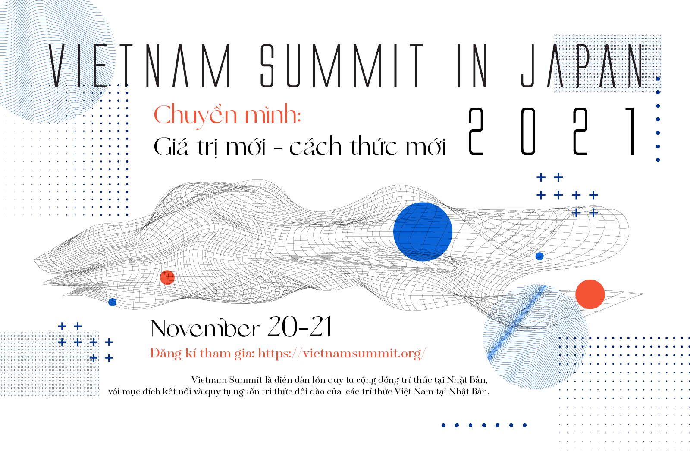

The COVID-19 pandemic is posing numerous challenges to all countries around the world, weakening many connections, and even breaking some completely. However, it is also opening up many new ways of connecting that were never possible previously. Facing with the fast dangerously fast spread of the virus, in addition to all the precautions and government countermeasures, researchers, policymakers, and businesses are also making efforts to prevent the spread of the virus and find answers for complex issues that need to be solved to stabilize society and develop new avenues for quality of life improvement.
In response to these challenges, the Vietnamese intellectual community in Japan wishes to build and maintain a space for all academic representatives to mutually share, discuss and connect in order to recover lost connections, strengthen weakened links, and seek out new bonds in the post-COVID-19 world. At the same time, we aim to create chances for Vietnamese intellectuals in Japan to consider opportunities which will allow them to offer their abilities to Vietnam as well. As a result, this will set a premise for the Vietnamese intellectual community in Japan to connect with agencies, organizations, and companies throughout Japan, thereby promoting cooperation and progress.
ụ thể.
This strong spirit of cohesion was the basis of the first Vietnam Summit in Japan, which took place in November 2019 in Tokyo with outstanding results; there were nearly 900 attendees, including 53 speakers and 100 guests boasting representatives of Government ministries, leading Vietnamese researchers as well as experts inside and outside Japan among them. Those figures have cemented the stature and influence of the largest scale ever conference of the Vietnamese intellectual community in Japan.
Following the success of the first Summit, the second Vietnam Summit in Japan will be held online on Zoom and Livestream on November 20th - 21st, 2021. The theme of this year’s conference is “Transformation: New values, new methods.” The goal of this event is to act as a bridge to connect and gather the Vietnamese intellectual community in Japan. The guest speakers will discuss solutions for the challenges that Vietnam is currently facing as well as unique opportunities provided by the COVID-19 pandemic.
Japan is currently one of the most attractive destinations for not only Vietnamese youth but also Vietnamese people in general as a result of the cultural similarities, and the increasing demand to exchange science technology and human resources between the two countries in the context of globalization. According to statistics of the Ministry of Justice of Japan, there are nearly 500,000 Vietnamese people living, studying and working in Japan. Among this recorded number, it is estimated that more than half are intellectuals including scientists, researchers, who are working at universities, research institutes, or experts at leading companies in Japan as well as entrepreneurs from many fields.
The rapid development of the number of Vietnamese intellectuals in Japan has led to the establishment of many Vietnamese intellectual associations, notably the Vietnamese Academic Network in Japan (VANJ), the Vietnamese Professionals in Japan (VPJ) and the Vietnam Youth and Students Association in Japan (VYSA). This development poses a great demand on building a common forum for the Vietnamese intellectual community in Japan, with the role of connecting and gathering the abundant knowledge of experts, scientists, policymakers and businesses leaders, thereby initiatives will be taken in order to help build and develop the Vietnamese community in Japan as well as contribute to the development of Vietnam in general. The impetus to create such a destination has prompted 3 organizations (VANJ, VPJ, VYSA) to jointly organize a series of programs of Vietnam Summit in Japan.
In November 2019, the first Vietnam Summit in Japan has officially took place in Tokyo. The forum welcomed the participation of domestic ministries and agencies, Vietnamese Embassy in Japan, Vietnamese companies inside and outside of the country, as well as guest speakers who are prestigious experts from various fields of research and business. With 10 in-depth discussion sessions, more than 60 speakers, and over 900 participants, Vietnam Summit in Japan 2019 has become a common space for not only Vietnamese intellectuals community but also Vietnamese in Japan in general to share, discuss, and together find solutions to urgent problems in national construction and development.
Viet Nam Summit 2021 will be held in 2 days
20-21/11/2021.
Association of Vietnamese Intellectuals in Japan (AVIJ)
Vietnamese Academic Network in Japan (VANJ)
Vietnamese Professionals in Japan (VPJ)
Vietnamese Youth and Student Association in Japan (VYSA)
Vietnam Japan Open Innovation Network (VJOIN)


Embassy of Vietnam in Japan
Vietnam National Innovation Center (NIC)